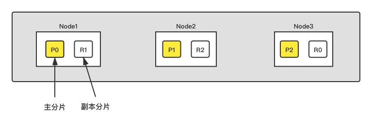

Ch02-Elasticsearch 之 Shard
August 3, 2021
Shard 即分片，它是 ES 分布式存储的基石，是底层的基本读写单元。ES 集群的核心就是对所有分片的分布、索引、负载、路由等进行各种操作。
分片分为主分片和副本分片，一般情况一个主分片有多个副本分片。主分片负责处理写入请求和存储数据，副本分片只负责存储数据，是主分片的拷贝，文档会存储在具体的某个主分片和副本分片上。
1. Shard 分配控制 #

某个 shard 分配在哪个节点上，一般来说，是由 Elasticsearch 自动决定的。通常新索引生成，索引的删除，新增副本分片，节点增减引发的数据均衡等操作会触发 Shard 的分配操作，也可以通过 cluster.routing.allocation.* 等参数进行精细控制。此外还提供了部分手动参数，用户可以通过其对 Shard 进行设置，allocate_replica，allocate_stale_primary，allocate_empty_primary，move,cancel。
2. Shard 路由计算 #
作为一个没有额外依赖的简单的分布式方案，ES 在这个问题上同样选择了一个非常简洁的处理方式，对任一条数据计算其对应分片的方式如下：
shard = hash(routing) % number_of_primary_shards
每个数据都有一个 routing 参数，默认情况下，就使用其 _id 值。将其 _id 值计算哈希后，对索引的主分片数取余，就是数据实际应该存储到的分片 ID。 由于取余这个计算，完全依赖于分母，所以导致 ES 索引有一个限制，索引的主分片数，不可以随意修改。因为一旦主分片数不一样，所以数据的存储位置计算结果都会发生改变，索引数据就完全不可读了。
3. Shard 设置 #
PUT indexName
{
"settings": {
"number_of_shards": 5
}
}
4. Shard 查询 #
| 参数 | 说明 |
|---|---|
| randomizeacross shards | 随机选择分片查询数据，es 的默认方式 |
| _local | 优先在本地节点上的分片查询数据然后再去其他节点上的分片查询，本地节点没有 IO 问题但有可能造成负载不均问题。数据量是完整的。 |
| _primary | 只在主分片中查询不去副本查，一般数据完整。 |
| _primary_first | 优先在主分片中查，如果主分片挂了则去副本查，一般数据完整。 |
| _only_node | 只在指定 id 的节点中的分片中查询，数据可能不完整。 |
| _prefer_node | 优先在指定你给节点中查询，一般数据完整。 |
| _shards | 在指定分片中查询，数据可能不完整。 |
| _only_nodes | 可以自定义去指定的多个节点查询，es 不提供此方式需要改 |
5. Replica #
在有副本配置的情况下，数据从发向 ES 节点，到接到 ES 节点响应返回，流向如下图所示。

- 客户端请求发送给 Node 1 节点，注意图中 Node 1 是 Master 节点，实际完全可以不是。
- Node 1 用数据的 _id 取余计算得到应该讲数据存储到 shard 0 上。通过 cluster state 信息发现 shard 0 的主分片已经分配到了 Node 3 上。Node 1 转发请求数据给 Node 3。
- Node 3 完成请求数据的索引过程，存入主分片 0。然后并行转发数据给分配有 shard 0 的副本分片的 Node 1 和 Node 2。当收到任一节点汇报副本分片数据写入成功，Node 3 即返回给初始的接收节点 Node 1，宣布数据写入成功。Node 1 返回成功响应给客户端。